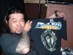
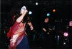

2003.09.19(FRI)�ڍ�LIVE STATION
BYS RECORDS presents BEHIND YOKE SYSTEMS 10
�o��:JURASSIC JADE�EUNITED�ESONIC AGITATION
���i�t�q�`�r�r�h�b�@�i�`�c�d�f�r�@setlists
�h�N�E�����E�X�y���}
������₪��
�o�������������@�v���������@�l����������
�V��2�i�S�[�O���j
���`�뉀
�V��6�iI found out)
�V��3�iGaza)
�V��5�iFighet�@For�@What�H�j
HYPERTONIC WONDERFUL MONUMENT
�V�ȂV�i����j
�V��4(�Ђ������̂����j
���h���[�i�`���������@�j�������������@�l�����`D-DAY�`�h�N���Ɣ��`�N�����E�������X�`�l��̋��C�j
���拾
���l�d�l�a�d�q�f�r�@comment
�g�h�y�t�l�h
�m�n�a
������ł̃��C�u�B
�����t�������ł���ƂƂ��ɁA���������S����h�ӂ������Ă���UNITED�B
�ނ�́A�����A�[�e�B�X�g���ƃ��X�i�[����̎x���邱�Ƃ��A�����Ƃ��o�����X�ǂ��̌����Ă���o���h���Ǝv���B
����Ȕނ�Ɂu�ς�����o���hJURASSIC JADE�v�������ނƂ�����悾�����B
����͉��ɂ����݂�Ȃ��y����ł��ꂽ�Ǝv���B
���ꂩ��A��������������������Ⴂ�o���h�ɁA��R�̂��q����̑O�ʼn��t����`�����X�����̂��A���B�̖��߂��Ƃ��v���B
���B�̃X�e�[�W��HAYA�̃s���`�Ƃ������A�˂��i�Ǝv���B
�̂̋Ȃ����҂��Ă������X�ɂ́A�\����Ȃ��������A�������́u�O�ɐi�ށI�v�o���h���B
�u���̉��B���Y�ݏo�����v���y�����t���邱�Ƃ��ړI���B
������A�����ł�����Ǝv���B
GEORGE
�g�`�x�`
�������ˁA�v�X�̊��ŁA���X���߂̎��Ԃł��[�����Ŕ��Ɂi�ُ�Ɂj�y���݂ɂ��Ă���ł����A������܂��܂����A�_�o��ჍĔ��ł��B
�܂��E�r���w��ǎg�����ɂȂ�Ȃ��Ȃ��Ă��܂��܂����B
���ڂ[���ŏڂ������������Ă܂����c
����������������������Ǝv���܂����A�T�|�[�^�[�ƃe�[�s���O�ŃK�`�K�`�Ɍł߂Ẵ��C�u�ł����B�͂��B
�I�J�Y��ς�����A�����W�����X�ς�����Иr�o�[�W�����ł̉��t�ł������������ł����ł��傤���H
�l�I�ɂ͓��ɏ����������܂߂āA�y�����������C�u�ł����ˁA��ȊO�́B�n�E�X�����ς�炸���₷���唚���ŁA�S�n�悭���t�����Ē����܂����B
�܂��A��Ⴢ��O��قǍ����͖����悤�ŁA�������͑�����������܂���B
����قǂł����ˁA�F����ɂ����f�����������ĂȂ�Ƃ��l�т��Ă������c
�ł����鎖�͂����������ĉɓw�߂����ƍl�������܂��B�Ƃ肠�����֎��ł��I�i���ꃁ�`�����`���h��������A�{���Ɂj
| ALBUM 1 |  |
||
| ALBUM 2 |  |
�����@�O�q���B�e | |
| ALBUM 3 | Tommy����B�e |
��BBS�@comment
�}�W�ł����I�I�@�@���e�ҁF���� �@���e���F 8��30��(�y)23��50��32�b
�ł��Ă܂���B
��George����
����ȋȂ�����ȋȂ��I�H
�ǂ�Ȃ邩�z�����܂���B
���[�A�܂������ȏ゠��܂���B�ǂ���B
�Ă̏I���A���߂����ł��B�@���e�ҁFNOB-JURASSIC JADE �@���e���F 9�� 5��(��)21��40��46�b
�܂��܂������������Ă��܂��܂����B
������@�l
���Ƃ��V�Ȃ���낤�Ɠw�͒��ł��B
�ߋ��̋Ȃ͂Ȃ��Ȃ��A���邳��̊��҂ɉ������Ȃ��ċ��k�ł��B
����2�T���@���e�ҁF���� �@���e���F 9�� 6��(�y)02��17��31�b
�V�Ȃɂ��ߋ��̋Ȃɂ���������ĂȂ���ő��v�Ł[���B
Nob �����悾���炱���� JJ ���C�u�ɂȂ�����ǂ��ȁA���Ă̂��]�݁B
����Ȃ������l�B������݂܂���悤�ȃ��C�u��I�I�I
���ɍs���܂���[�I�@���e�ҁF�{���t�h�k�t�r�]�r�F�c �@���e���F 9��11��(��)23��55��39�b
�m�n�a����I�X���P�X���̃��C�u�X�e�[�V������ז������Ă��������܂��I�I�s���N�̔��̖т�,���ʂ̃I�[�o�[�I�[�����{���t�h�k�t�r�|�r�F�c�ł��I�I���Ԃ�P�S���̎s��̃��C�u�Řr����Ă�̂�,�E�r�ɕ�т������Ă܂����番����Ղ��ł��傤(��)�I
����ς��@���e�ҁF���� �@���e���F 9��12��(��)21��48��23�b
�P�X���͂ǂ����Ă��x�߂܂���ł���(T_T)
���C�u�߂Â��Ă��܂����I�@���e�ҁFNOB-JURASSIC JADE �@���e���F 9��13��(�y)23��52��16�b
�����I�ł��ˁB�c���o�e���O�ł��B
�v���Ԃ�̎��B��Ã��C�u���߂Â��Ă��܂����B
�Q�O�O�R�D�O�X�D�P�X(FRI) �ڍ�LIVE STATION
BYS RECORDS Prsents �uBEHIND YOKE SYSTEMS 10�v
JURASSIC JADE�@VS�@UNITED
(opening act�@SONIC AGITATION from nagoya)
OPEN�@6:30�@START 7:00
�O���E�������Ɂ��P�W�O�O�{�PDrink
�@�@�@
��R�̃o���h���ڂ܂��邵�����t���J��L���Ă����C���F���g�Ƃ͎��ς��A��������Z�����C�u���������������Ǝv���܂��B�@
Opening act�ɂ�1st�A���o���gACROSS ALL APPREHENSION"�������[�X����SONIC AGITATION�𖼌É�����}���܂��B�@�@
�uJURASSIC JADE��UNITED�͎��Y�������܂��B�I�X���X�͌��܂��Ă���ǂˁB�i�j�vby HIZUMI
����I����I���z���������I
�`�P�b�g�\��E���₢���킹��nob-jj@syd.odn.ne.jp �܂ŁB
������@�l
���C�����̌��t�L��������܂��B
�V�Ȃ͔�I�o�������ł��B
���̑��݊���|�W�V�����S�Ă����h�o����UNITED�E�`�������W���_�����Ղ��SONIC�@AGITATION
��ɔR�������Ǝv���܂��B
�{���Ɍ����˂��l���������ɂ�����悤�ȃ��C�u�ɂ������ł��I
���{���t�h�k�t�r�]�r�F�c �@�l
���Ă���܂����I���肪�Ƃ��I
���߂Č��Ă���܂��ˁB
���҂𗠐�Ȃ����C�u���������܂��I
������@�l
�c�O�I�ł��܂��`�����X������Ǝv���܂��B
�܂��ˁI
���悢��R����I�@���e�ҁFjjcrew �@���e���F 9��16��(��)11��44��45�b
�ڍ����C���X�e�[�V���������������Ă��܂����B�v�X�̒����Z�b�g�^�C���A��ԃ��j���[�ɉ����Ăǂ�ȋȂ����t�����̂��A���͎������܂��m��܂���B�F����Ɠ����������܂ł̂��y���݂ɂ��Ă������Ǝv���܂��B
�����A���c�n��G���A�ɑ����^�т܂����B�o���o���h�̔M�C����p�t�H�[�}���X�ɐG��A�u�����Ă��邩�I�v�Ǝh�����܂����B�C���������ėՂ݂܂��̂ŁA�����V�N�ł��I�I�I
���悢��I�I�ڍ��I�I�@���e�ҁFTAKA �@���e���F 9��17��(��)23��52��09�b
�������Ăɔ���܂����ˁI�I�I�����炷�������[�y���݂�����I�I
�{���A�ǂ�ȋȂ���Ă����낤�I�I�H�H�H�i�O�O�j
GORE�̋ȂƂ�������Ă���邩�Ȃ��H�H�i�O3�O�j/
�Ƃɂ����A�����̓����V�N�ł��I�I
�����₷�I�@���e�ҁFGEORGE-JURASSIC JADE �@���e���F 9��18��(��)00��29��24�b
���悢�悠�����Ăł��I
�V�Ȃ���I�o�������ł��̂ł��y���݂ɁI
��TAKA����
���Ȃ����͂ǁ[���I
�Q������ĂĘb�o���܂���ł������ǁB
�����Ղ�y����ʼn������ˁI
��jjcrew����
�K�i�����ł����A���������V�N�����I
�����́i�������H�j�@���e�ҁF�t�W�C �R�E�W �@���e���F 9��19��(��)00��24��19�b
�܂��A�s���܂��B����A�s���܂��I�I�i�j
�撣���Ă��������I�I�݂Ȃ���B
�ڍ��@���e�ҁF���� �@���e���F 9��19��(��)01��12��23�b
���C�u�X�e�[�V�����s���͉̂��N�U�肾�낤�B
�V�Ȃ��Â��Ȃ��y���݂ɂ��Ă܂��B
�{��!!�@���e�ҁFAJIROCK@WORD OF RIGHT �@���e���F 9��19��(��)01��37��54�b
�y���݂ł�!!�s���}�b�X��!!�撣���Ă��������`!!
���ꂩ��o�|���܂��B�@���e�ҁFNOB-JURASSIC JADE �@���e���F 9��19��(��)11��53��14�b
���C�u�����ł��B
�܂��܂��c�����������ł��ˁB
����V����UNITED�Ƃ���������A����܂ŗ�Ă������̂Ƀs�[�J���ŏ��`������ɂȂ�܂����B
�V���J���ł��B�����Ԃ�����̕��ǂ������z�����������B
�Ă̔�ꐁ������܂��傤�I�I�I
���t�W�C�R�E�W�@�l
�Ȃ�Ƃ����ĉ������B�������������Ȃ��悤�ɂˁB
�����@�l
�����Ƃ��납�炠�肪�Ƃ��I
�Â��ȁE�E�E�B
�V�����ȁI�I
��AJIROCK@WORD OF RIGHT �l
�����I���Ă���܂����B���肪�Ƃ��B
�҂��Ă܂��B
���������@���e�ҁF���� �@���e���F 9��19��(��)21��53��05�b
���ƂɋA���Ă��܂���(T_T)
�����ڂ�B
���`���́A�@���e�ҁF�t�W�C �R�E�W �@���e���F 9��20��(�y)00��16��40�b
�������܂��ƁA�����͌Â��Ȃ����\���̂ł́H�Ǝv���āA�e�[�v�^�������Ă��܂��܂����B���̂悤�ȍs�ׂ͂i�i�̃��C���ł́A�֎~�ł����H
���āA���C���̓��e�́A�������V�Ȃ̃p���[�������āA"I Found Out"�Ȃ́A�������i�i�̐V���ʂ������Ă��ėǂ������Ǝv���܂��B
������ƁA���ꂩ��A�^�������e�[�v�ŐV�Ȃ��Ă݂܂��B���낢��Ȕ���������Ǝv���܂��̂ŁB�i���̃��K�l�̕��A���������̂ł��傤���H�j
�V�Ȃ������Ă����̂ŃA���o�����������낻�납�ȁH�Ƃ��v���܂����A���Ƃ��Γ����x�`�m�j�d�d�r�����̏H�ɃA���o�����o���܂����A�ނ�͂���Ami�����Ȃ��Ȃ��Ă���X�N�ԃ��C������i�������s���ƐV�Ȃ������Ă���j����Ă��āA����ƁA���̎����ɏo���̂ł��B������A���C���Ő����]�����Ă���A�������I���ꂽ�Ȃ��A���o���Ɏ��^����Ƃ����̂������ł��ˁB
����܂ł́A�f����e�[�v�ł����������H�Ƃ��v���܂��B�������́A�^���c�c������ł����H
����ꂳ���@���e�ҁF���� �@���e���F 9��20��(�y)00��28��11�b
������19���O�ɓ����B�r������Ɉ��A���ĉ��ցB
������SONIC AGITATION�J�n�B�V���������܂�������������܂����B
���C�u���i�ނɂꐷ��オ���Ă����T�}���悭�킩��܂����B
�ŁAJJ�B
�܂������A���`�뉀 + Hypertonic �ɋv���Ԃ�ɉ���̂��������B
����2�Ȃ͂���ς����ł��ˁB����ɑ�D���� I Found Out(�ዾ�������̂��ȁH)�Ƃ���
�V"�V��"�B���ꕷ�������ɖ{���ɐV�������������Ȃ�܂����B
���̌�A�ȑO�f���ɂ��������݂������h�Ђ������̂����h�̉̎��A
�����炿���ƕ����Ă݂��肵�Ă݂��...���̉̎������Ə�i��������...
���S�[���Ȃ�܂��ˁB�ł����̖\��^�C��+���B
���͑�����JJ�ɊԂɍ���Ȃ������̂Œ�������Ă�����
��Œm���Ă̂ł�������1���Ԍo���ĂȂ�������ł��ˁB
���������Ƃ����Α���������...�����ƕ������������Ƃ����ΐ���...
���������Ė{���͂���ɂ܂�����̂��ȁA�Ɗ��҂����肵��������
���i�C�^�撆��George ����Ɂh���̌�������o���肵�Ȃ���ł����H�h
�Ƃ��������Ⴂ�܂������B���ꂪ�c�O���ȁB�~�܂݂�ł��ȁA�����B
�r�������Ǝ���10���H�����q�H���R�s���܂���B
�ŋ߂Ƃ����t�̏�����l�{�[�J���̃o���h�ɕ��C���n�߂Ă܂��B
HIZUMI����ɂ����Ɖ�킹�Ă�������!!
�r������@���e�ҁF�悤�ւ� �@���e���F 9��20��(�y)02��15��05�b
�{���A�d���ōs���Ȃ������ł��B���Ă��̂ɂ��߂�Ȃ���(��)
�d�b�ԍ������Ă��܂��ēd�b�����[�����ł��܂���B
�W���[�W���`��I�������`����`�`�`��B
�����A�҂��܂����@���e�ҁFjjcrew �@���e���F 9��20��(�y)02��16��03�b
�ڍ����C���X�e�[�V�����ɂ����ꂢ���������F����A�o���̊F����A�ǂ��������l�ł����I��Ђ��璼�s�̓r���Q���i������`�����ɃX�~�}�Z���ł����j�ŁA�ƂĂ��Q�����������ł������A���q����̃z�b�g�Ȕ��������������������I�V��T�V���c�����̓�������ł������A�u���Ԃɔ���Ă����܂����B���͑�ゾ�I23���i�E�j�j�͓�g���P�b�c�ɏW���I�I�I
���ƁA�ߓ�����jjcrew's room���X�V���܂��B
������l
���[�Ɣ����q��11���ł��i�m���j�B�ڂ�����NOB����ɂ��A�b�v��҂��܂����B
�ǐL�@���e�ҁFjjcrew �@���e���F 9��20��(�y)02��19��36�b
����[�ւ��N
�ł��グ�̂ݎQ���ł��悩�����̂Ɂi�j�B
�uD�v��CD�A�������������Ă������̂ɓn���Ȃ������ˁB
�܂����x�I���������A���uD�v�̃R�s�[�o���h����Ă��B
�����l�Ō�����܂����I�I�@���e�ҁF�T�b�`���}�����f�D�f �@���e���F 9��20��(�y)02��59��22�b
�ڍ��̃A�c�C��A�߂����ς��������Ŋy���܂��Ă��������܂����I�I
�V�Ȋy���݂ɂ��Ă����̂Œ����ăJ���Q�L�ł����B�A���o�������o�Ȃ����Ȃ��`�Ȃ�č�����\���\�����Ă܂��I�I
�u���K�l���K�l�I�v����������Ő��肾������ł����ˁi�j�I�I
���͖����A�����B�̃��C�u�����Ă̂Ɋ撣�肷���đ̒��o�L�o�L�ł����i�j�A�G�l���M�[���^���`���[�W�ł��I�撣���Ă܂���܂��I�I
�����q���I�I��������r���ĎQ�킷�����f�X�I
���̑��A�撣���Ă��������I�I�I
����ꂳ�܂ł����@���e�ҁFTommy������ �@���e���F 9��20��(�y)07��28��33�b
SONIC AGITATION�ɊԂɍ���Ȃ������̂ŁA���Ȃ藎�����݂��݂ł����B
�ł��AJ�EJ�̉��t���Ă��邤���ɁA�S�͖�����Ă����̂ł����B
�Ȃ�ĕs�v�c��BAND�Ȃ낤�H�����v�������Ă����Ƃ��ė��܂����B
�s�v�c�ȍ��́A���ς�炸�����Ă��܂���B�R���͓��ʂ��甭������
�I�[���Ȃ̂�������Ȃ��ł��B�����ėD�����B������ׂ��l�B�ł��A���ɂ͂ˁ�
���C���ʐ^�A���C������A���čŌ�̃G�l���M�[�U��i����UP���܂����B
�\���̂ɖZ�����āAJ�EJ�̎ʐ^���Ȃ��Ă��߂�Ȃ����I(^-^)/
http://homepage2.nifty.com/Tommy/index.html
����ꂳ�܂ł�����!!�@���e�ҁFAJIROCK@WORD OF RIGHT �@���e���F 9��20��(�y)15��09��46�b
�Z���`�C�x���g�ō��ł�����!!�ŏ�����Ō�܂ŏオ�茞��ŋA��̓d�Ԃ͕@�́�`���������E�ł���!!�܂����C�����ז������Ē����܁[��!!
�����l�ł����I�@���e�ҁFwildcats �@���e���F 9��20��(�y)17��40��21�b
����̓`�P�\�Ă����Ȃ��炢���邩�ǂ���������Ȃ��Ȃ�������āc
NOB���肪�Ƃ��������܂����B�v���Ԃ�Ɍ����̂ŐV�����Ȃ������Ă��āA�����I���ĂȊ����ł�����B�Ō�̍Ō�܂Ŋy�����C�x���g�ł����B
��jjcrew����
�낭�Ɉ��A���Ȃ��Ă��݂܂���ł����B�s�V���c�����Ă���ł��ˁB�I����͕����̂�����ƂŃw���w���ɂȂ��ĉ��O�ɍ����Ă܂����B���̂܂ܐQ���������ł��B
�܂����ł��������X�����ł��B
�����l�ł����@���e�ҁF���� �@���e���F 9��21��(��)00��56��22�b
����̓��C�u�A�ŏグ�ƂƂĂ��y���������ł��B
������蒷�߂ł����Ղ蕷���Ė����ł��B
�V�Ȃ������Ă��āA�V�삪�y���݂ł��B
�ŏグ�ł��b���܂������A���h���[�ł���Ă�Ȃ����܂ɂ̓t���ŕ��������ł��B
���肪�Ƃ��������܂����I�I�@���e�ҁF�C���^��SONIC AGITATION �@���e���F 9��21��(��)17��29��04�b
�@����͂���ꂳ�܂ł����B�ǂ��@���^���Ă��炦�āA�y�����������A���ɂ�
�Ȃ�܂����B����σz�[���ł���y���̃��C�u�͈Ⴂ�܂��ˁ`�B
�@���ꂩ�������҂Ƃ��āA�ǂ�ǂ�Ԃ����Ă������Ǝv���܂��̂Łi�j�A
����Ƃ��X�������肢���܂��B
���肪�Ƃ��������܂����B�@���e�ҁFNOB-JURASSIC JADE �@���e���F 9��21��(��)20��59��41�b
�x���Ȃ�܂����I
�P�X�����z�������������F����IUNITED�ISONIC AGITATION�I�X�^�b�t�݂̂�ȁI
���肪�Ƃ��������܂����B�v���Ԃ�̊�惉�C�u�݂͂Ȃ���̂��A�őf���炵�����̂ɂȂ�܂����B
���ꂩ��A�T�����́u�߂��ˁ`�߂��ˁv�̓��C�u�I���E���|�I����ɁA�����������܂����B�Ȃ�ƂقƂ�ǖ����I
������@�l
���邳��̐���ɉ��Ƃ������悤�I�ƋC������ꂽ��惉�C�u�B�y����ł����������悤�ŁA�ق��Ƃ��Ă܂��B�I�����Ԃ����������C�u�n�E�X�Ȃ̂Łi�ł��A���������Ă���Ă��̎��ԂɂȂ�����ł��j�A���ꂪ����t�ł����B
���ꂩ����U���܂���A���C�u�B�܂��͔����q��11��8���i�y�j�ł��I
���悤�ւ��@�l
�厖�Ȃ��̂������˂���B�ɂ��������ˁB�ŏグ�����ł����Ȃ����I
���T�b�`���}�����f�D�f �l
�őO��ɂ����ˁB����͒p�������������ł悤�Ȃ��Ƃ͂Ȃ������ł����H
���C�u���ɂ����Ȃ��Ă����܂���B������͂����Ƒ̂ڂ�ڂ�ł��B
�����q���Ă��������A�҂��Ă܂��B
��Tommy������@�l
�����l�I�ʐ^�q�����܂����BUNITED�̑����đA�܂����E�E�E�B
����Ɋ��҂��Ă܂��B�ł��ˁA�B��Ȃ����炢�\��Ă��ꂽ������������B
��AJIROCK@WORD OF RIGHT �l
���肪�Ƃ��������܂����I�Ȃ�`���Ă����������Ă����܂���B
�}�g��UNITED�EJURASSIC JADE�EWORD OF RIGHT�ł��܂��H
��wildcats �l
�����l�I���肪�Ƃ��B
�܂������̃��C�u���ň����܂��傤�B
�����@�l
�����Ƃ��납�痈�Ă���Ă��肪�Ƃ��I
�u�{���ɐ̂̋Ȃ�P�̂ł���Ă���v���Ă��Ƃł��ˁE�E�E�B
�܂��A����̃R�s�[��Ƃ��K�v�ł��B�i�j
�V�Ȃ��y����ł���Ă�悤�Ŋ������ł��B
���C���^��SONIC AGITATION �l
�C���̓��������C�u�����Ă���Ċ����������Ȃ��B
�W���[�́u�������́A�W�����V�b�N�ƃ��i�C�e�b�h�̎q���̂悤�ȃo���h���v�͏����������B
���ꂩ��������ɗ��Ă��������B
���̒����Ɍ������܂��I�@���e�ҁFNOB-JURASSIC JADE �@���e���F 9��22��(��)00��35��49�b
���t�C�W�@�R�E�W�@�l
���X�������܂����B�����܂���B���ꂻ���ɂȂ��ƕ����Ă�������A�����Ƌ��Ɋ������v���Ă��܂��BREC�����Ⴂ�܂������E�E�E�B�l�I�Ɋy����ł����Ȃ�S�R���Ȃ��ł��B
�V�ȕ��������Ă݂Ă�B
���̋ꂵ�����āA�悭�����ɏ�������ł邯�ǁA�`����d���I�ɍ���Ă�킯����Ȃ��B
�z���g�ɐS����̗~���Ő��܂�Ă�B��肽�����č���Ă�B�����ǁA�l�I�ȕ\���ł͏I��肽���Ȃ�����A�����o�[�Ƃ̂����Ƃ����u������������v��Ƃ����B���ꂪ�ꂵ���āA�����ǂ₪�Ċ�тɕς��B�����o�[�̒N��艴����Ԋ������̂��B����ȋȂ��Ă݂Ă�B
�悩�����B�@���e�ҁF�t�W�C �R�E�W �@���e���F 9��22��(��)03��26��46�b
��[�A�e�[�v�^���A�܂��������̂��A�Ǝv���܂����B�m�n�a����A�{���Ă�̂��Ǝv���āB�u���u���c�B�i�j
���撣���ĉ������I�I�V��ǂ��Ȃ��ł����c�B
���ƁA�t�C�W �R�E�W���āc�i�j
�f���炵���I�I�@���e�ҁF���� �@���e���F 9��22��(��)04��22��02�b
�X���P�X���̃��C�u�ɍs���܂����B�v���Ԃ�Ȃ̂�����܂������A�Ȃ��ǂ��ėF�B��
���`�����`���������Ă܂����i�O�E�O�j�����m���x��Ă��܂����̂ŁA�s���ŁE�E�E�B
����̃��C�u�ł́A�͂����܂��I�ICD�������܂��i���@���j���̃��C�u���撣���ĉ�����
�x���Ȃ�܂������@���e�ҁFmibo �@���e���F 9��22��(��)09��26��59�b
�P�X���͖{���ɂ����l�ł����B
�R����x���Ɋ������܂�P�Ȗڌ������A�{�C�Ŕ�э��l�����݂����ł����B�B
���A�����Y�ꂳ���Ă���邮�炢�y���܂��Ă��������܂����B
�����Ă��銴�����ƐV�Ȃ��������炢�̊������ۂ��Ȃ��Ă������������܂��B
�܂��V�����Ȃ������ėǂ������ł��B������y���݂ɂ��Ă��܂��B
���̓��P�b�c�Ȃ�ł��ˁA���������ł��B�B���C�u�撣���ĉ������B
�x����Ȃ����@���e�ҁFTAKA �@���e���F 9��22��(��)23��43��30�b
19���̃��C�u�X�e�[�V�����A�����l�ł����I�I
���������ꂾ���������Ԃ���Ă��炦��ƁA�{���Ɍ��������[���ő喞���ł����I�I
����́A�����炭11/23�̃E���K�ɂȂ�Ǝv���܂������̎����܂������V�N�ł��I�I
����A���ꂩ�������܂��B�@���e�ҁF���� �@���e���F 9��23��(��)01��17��50�b
Nob ���[��I�I BYS11 �M�]�I�I�I�͂₭�[�I�I�I�I
���Ԃɐ������������Ƃ͒m��܂���ł����B
������������ł����܂���ł��i����j
���[���ł��C���g���Ă�����Ă��肪�Ƃ��������܂��B
������������ Nob ����Ƙb�o���܂���ł����i�������������b���Ă܂��j
�O��̔����q��"�ʉَq���o"�̃V�[��������������C�u�ł����B
11���̔����q�A��낵�����肢���܂��ˁB
����̃��C�u�Ōg�т��u�`���܂����B�����@����Q�b�g�����̂�
������܂��u�`��ꂷ�܂Ŋy���݂܂��i���₾�j�B
������@���e�ҁFDECRYPT �@���e���F 9��26��(��)23��57��18�b
����ꂳ�܂ł����[�A�C�������V���L���Ƃ��܂���!
���̓z���g���...���܂������ł��[�B
�����܂���A���m�����Ă��������B
10/25(�y)�V�hURGA
DECRYPT presents �wPISICA LUPTA,UNU�x
w/�\�X�Ԓn(ex.HELL CHILD)
DISPLACED PERSON
TERROR SQUAD
SILVER BACK(sapporo)
DIE YOU BASTARD!
open18:00/start18:20
adv��1,500/door��1,800
(��)URGA:03-5287-3390
���ɂł����琥��A�V�тɂ��Ă��������܂���
http://www.geocities.jp/decrypt93/
�I�I�I�@���e�ҁFAJIROCK@WORDOFRIGHT �@���e���F 9��27��(�y)18��13��02�b
NOB-JURASSIC JADE����!!���X��������!!�}�W������!!���x�[����!!�K�N�K�N�A�u���b�u���b!!����Ȃ��ꂽ���ł�����??���肢���܂�!�K�N�K�N�b
�x���Ȃ�܂������I�I�I�@���e�ҁFNOB-JURASSIC JADE �@���e���F 9��30��(��)00��12��57�b
���t�W�C �R�E�W �@�l
���ꂩ��t�C�W�N�ƌĂ��Ă��炢�܂��B�i�j
�L�[�{�[�h��ł肪����Ă�ˁE�E�E�B
�����Ɓ@�l
�V�Ȃ��炯�ł����܂���B���X���Ă��������ˁB
���肪�Ƃ��B
��mibo �l
���肪�Ƃ��������܂��B
�F��Ȃ��Ƃ��������ł��ˁB���Ƃ����Ă��������ėǂ������E�E�E�B
�̃��P�b�c�Ō��Ă��������܂����ˁAYASUNORI���ݐЂ��Ă�����ł��ˁB
��TAKA�@�l
�����l�I�y����ł��炦���悤�Ŋ������ł��B
UNITED�̎��_�C�u���߂��āA���������ɓE�ݏo����Ă܂����ˁi�j
���߂�ˁI���C�u�X�e�[�V�����͋ցI�_�C�u�Ȃ�ł���A�{���́i�c�O�Ȃ��ǁj
�ł��ˁA���q����̔��I�͎~�߂��Ȃ���ˁB
�܂����ɗ��Ă��������B�҂��Ă܂��B
������@�l
����I�܂�����ɐ����Ă܂��B
���������}�ɏ���đ����Ă��������ł��ˁA��惉�C�u�B
VS�V���[�Y�ł��������ł��ˁB�����������h�o���āA�l�C�̂���o���h�Ə�������`���ŁE�E�E�B
�\�j�A�W���C�ɓ����Ă��炦�ėǂ������B
�����q���Ă��������B�撣��܂��B
��DECRYPT �l
���݂���A�����l�ł����I
���Ă���܂������H���肪�Ƃ��B
����ςł���ˁB�����c���Z�����y���݂ł��ˁB�撣���āI
��AJIROCK@WORDOFRIGHT �l
��肽���Ȃ��������H���̃����c�ŁB�ʔ����Ǝv���܂���B
19���̃I�[�v�j���O�E�A�N�g�̌��ɏオ���Ă܂�����AWORD OF RIGHT�B
���t�C�W�i�H�j�@�R�E�W�@�l
��肪�Ƃ��I�V���߂̉����̊��z���������ł��B
BACK TO